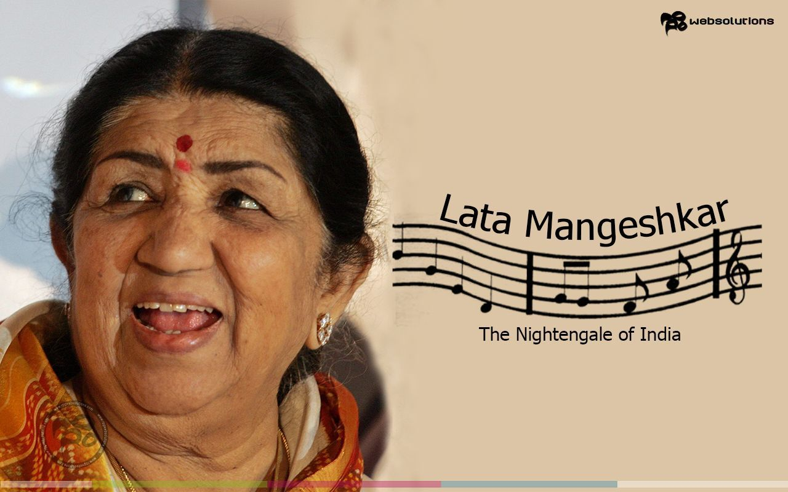

⪼ Lata Mangeshkar ⪻
|

|
| ... Lata Mangeshkar( 1929-2022 ) ... |
A Short Biography of Late. Lata Mangeshkar-ji
- - Lata Mangeshkar ( born as Hema Mangeshkar ) 28 September 1929Indore, Indore State, Central India
- - She was an Indian playback singer and occasional music composer
- - She is widely considered to have been one of the greatest and most influential singers in India
- - Her contribution to the Indian music industry in a career spanning seven decades gained her honorific
titles such as the "Queen of Melody"
- - Lata Mangeshkar recorded songs in over thirty-six Indian languages and a few foreign languages
- - She was primarily in Hindi, Bengali, Marathi.[9] She also sang in English, Russian, Dutch, and even
Swahili
- - She received several accolades and honors throughout her career. In 1989 the Dadasaheb Phalke Award
was bestowed on her by the Government of India
- - In 2001, in recognition of her contributions to the nation, she was awarded the Bharat Ratna, India's
highest civilian honour; she is only the second female singer, after
M. S. Subbulakshmi, to
receive this honour.
- - France conferred on her its highest civilian award, Officer of the National Order of the Legion of
Honour, in 2007
- - She was the recipient of three National Film Awards, 15 Bengal Film Journalists' Association Awards,
four Filmfare Best Female Playback Awards, two Filmfare Special Awards,
the
Filmfare Lifetime Achievement Award and many more
- - In 1974, she was one of the first Indian playback singers to ever perform at Royal Albert Hall in
London, UK
- - Her last recorded song was "Saugandh Mujhe Is Mitti ki" released on 30 March 2019 as a tribute to the
Indian army and Nation
- - At one point, she appeared in the Guinness World Records which listed her as the most recorded artist
in history between 1948 and 1987
- - Lata Mangeshkar passed away on 6 February 2022 (aged 92) in Mumbai, Maharashtra, India
..."As a singer, you have to bring the soul to the song"...
⪤ Lata Mangeshkar ⪤
IF YOU HAVE TIME, YOU SHOULD READ MORE ABOUT THIS INCREDIBLE HUMAN BEING ON THIS wikipedia